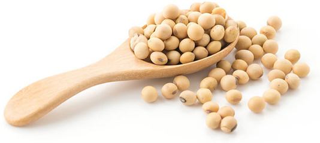

РАННІ СОРТА СОЇ


НАСІННЯ СОЇ ПІД РАУНДАП
ТОВ «ВІКОЛ-АГРО» виробник
посівного матеріалу пропонує
СОЮ під раундап
РАННІ СОРТА СОЇ
СЕРЕДНЬОРАННІ СОРТА СОЇ
СЕРЕДНЬОПІЗНІ СОРТА СОЇ
Контакти:
098-672-19-39,
095-375-36-69
vikol-agro@ukr.net
Юридична/фактична адреса:
36020, Полтавська обл.,
м. Полтава, вул. Гоголя, буд.12, оф. 413
Vikol Agro © 2022 Всі права захищено